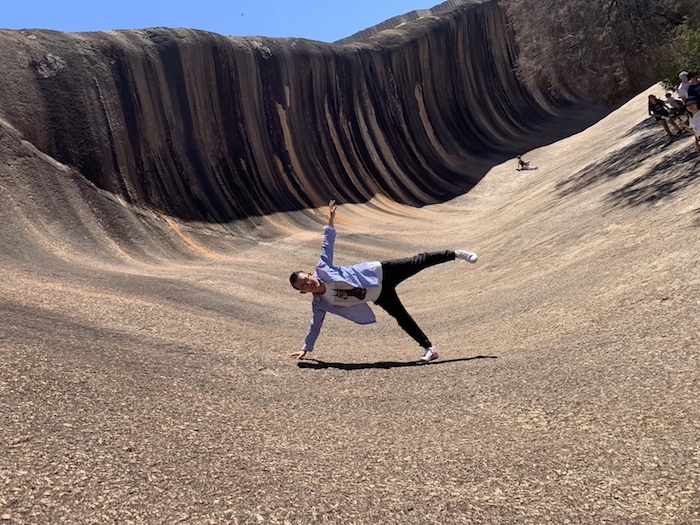
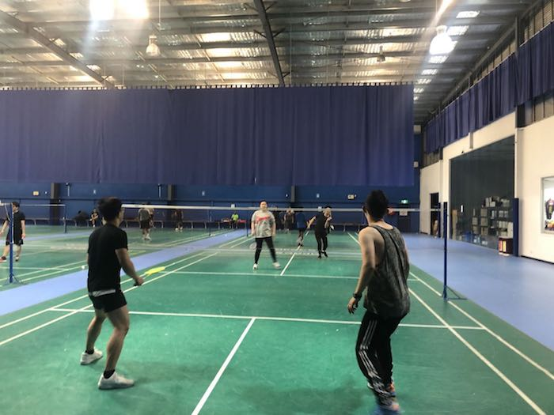
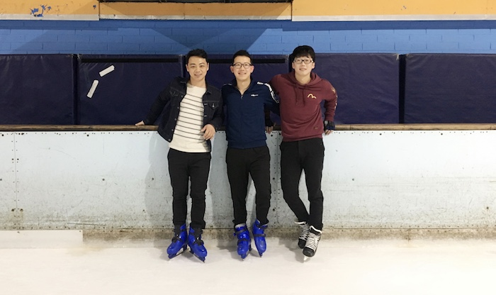
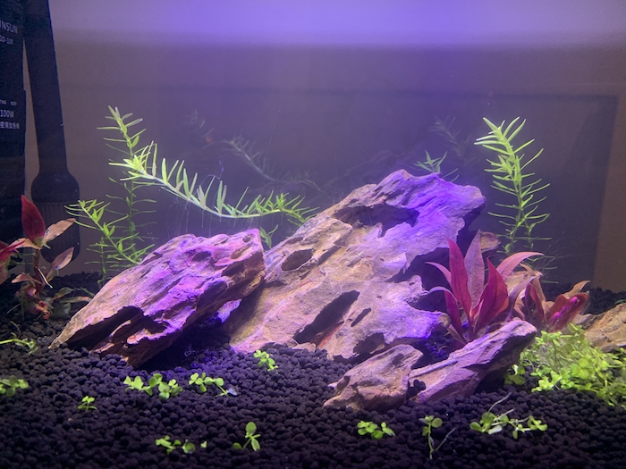

Portfolio
Interested Area
Web Design
When I surfing on the internet, I am so curious about the structure of the web which looks so beautiful and fantastic. You can’t imagine how magic it is when your idea come out with a web. I discovered that I could achieve the look I was going for if I edited the HTML instead. I became fascinated the ability a web developer has to be imaginative, artistic and technical, while developing a product that benefits and inspires others.
Programming
It is really feeling good when you have finished a program which has been worked successfully, and this program can help clients achieve their goals just with a simple acting. You can get a lot from the programming which conducted by you, including different businesses or subjects. Isn’t it amazing?
Hobbies
Travelling
Travelling is always a good choice when you have a holiday. You can see many different scenes in different places, and talk with local people, feeling what the local people feel. At the same time, from cutting down on stress, to lowering your chances of developing a heart disease, the health benefits of traveling are huge. You may stay sitting on a chair all day long at the workplace,including some walking to your trip is sure to make your body feel better.
(Please click picture to know more if you want)Badminton
I have been playing badminton for four years and my skills are pretty good. I think badminton is a very healthy aerobic exercise, which is very effective for cervical spondylosis caused by the mobile phone family. At the same time, you can also meet many good friends.
(Please click picture to know more if you want)Ice-skating
I just had 6 times ice-skating experience up to now, but I can do really good in that. I have learned how to turn with stepping another foot, and how to forward and reverse with two feet, it is really interesting when you are flying on the ice.
(Please click picture to know more if you want)Tennis
I become a tennis beginner after I saw the Australian Open in 2020(By clicking the following picture,you can watch the excellent game). It is a really good sport which a large amount of people caring about it. It is really hard for me to learn tennis due I have experiences on badminton. I always hit the ball with badminton style which is really bad for the tennis. So, there is a long way for me to hold it. Though I am sure I could.If you want to learn how to play tennis as well, let's play together.
(Please click picture to know more if you want)Keep fish
You can’t imagine how happy it is as you are building your fish tank, just like build an apartment for the fish. You have to plant some carpet plant for the fish tank. Then you must consider the recycle water system for it, and most important thing is you have to separate the baby fish with their mother which might eat them after they producing them. In a word, it is interesting and amazing.
(Please click picture to know more if you want)